万花筒 | 中国队长真的有！盘点各国的队长们
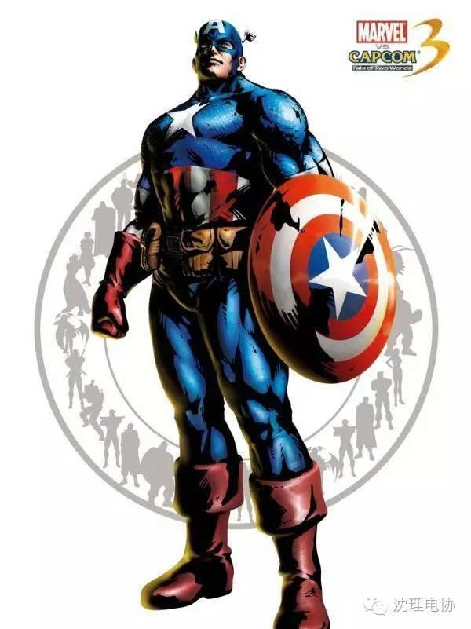
物理系学生，工作的核子研究生遭到袭击后驾车逃生，却发生车祸。之后得到应该亚瑟王年代的魔法师梅林救助，并学会了魔法的力量，之后获得了石中剑，更是如虎添翼。
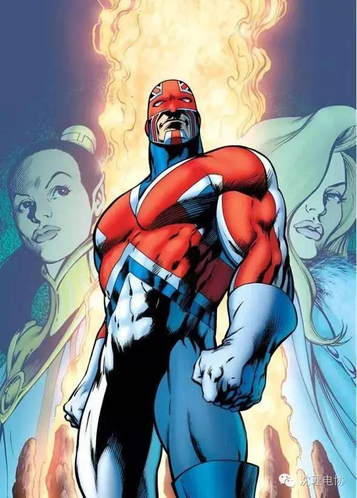
这货又一次出现了，有人说他是港漫，有人说他是美漫。其实这货是漫威的几个中国工作人员画的，设定方面总之是各种抄袭美国队长。冰冻解冻啊，强化士兵啊。神枪手，愈合能力强，武器为特制的“革命炮”。总之……略奇葩……
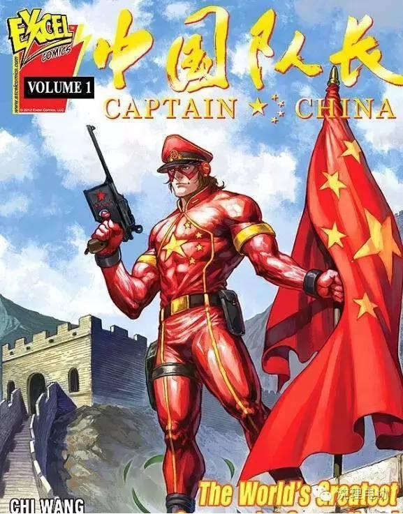
自身没有超能力，有一把冰冻枪可以产生绝对零度级别的超低温，无赖帮的老大。亦是闪电侠的长期反派。
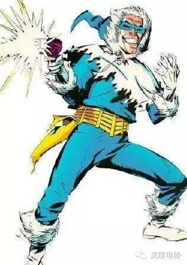
这个队长承载了我们童年的回忆啊！野兽战争中巨无霸的将军，擎天柱领导模块的继承者。巨无霸和汽车人的混合金刚。
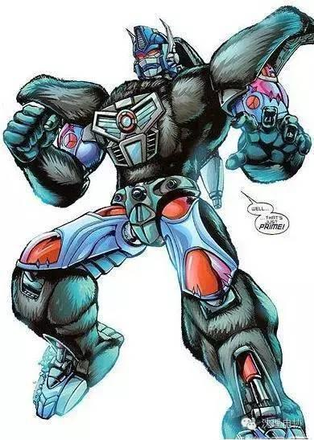
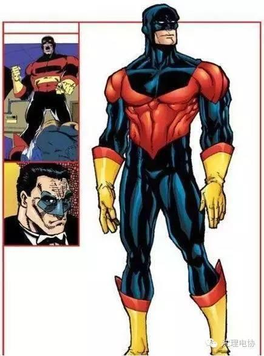

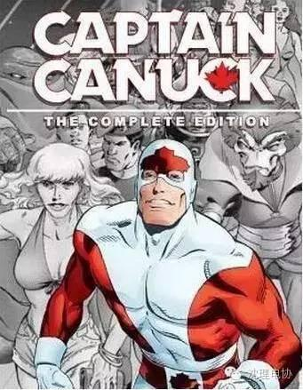
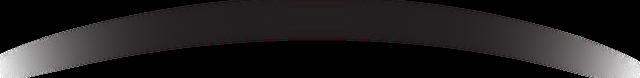
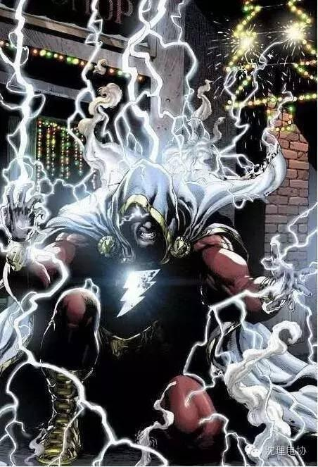
克里某舰队尉官，他在与斯克鲁尔人的战斗中表现出众，受到至高智慧的赏识，派他去地球卧底，破坏人类的航天工程，但他却对地球人产生了敬意，帮助他们解决困难，最终获得了惊奇队长的英雄称号。
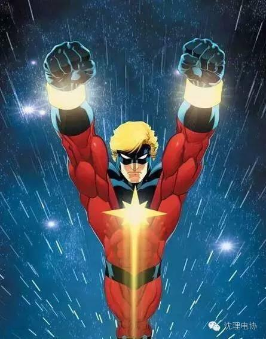
美国空军军官，越战时遭人陷害被判死刑。为了争取总统特赦而同意参加一次军事试验，在核爆中测试一艘坠毁的外星飞船的耐受性。结果纳森尼尔融合了飞船金属，全身像是镀了水银，可以从量子场中吸取无限的能量。
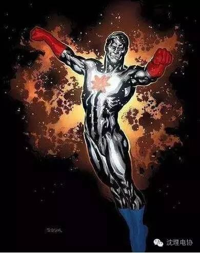
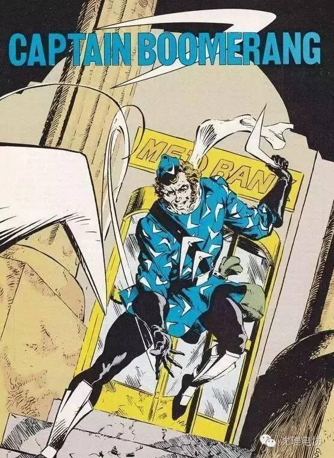
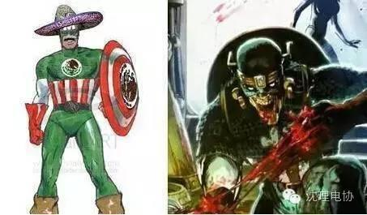
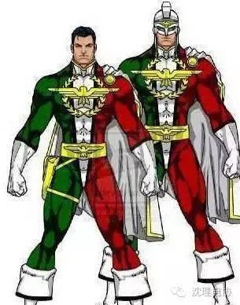

信息部/黄志勇